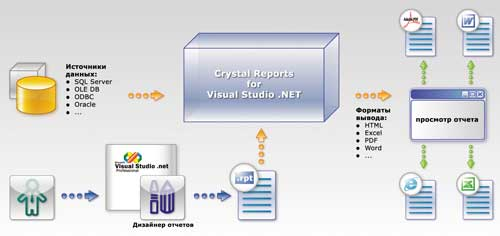
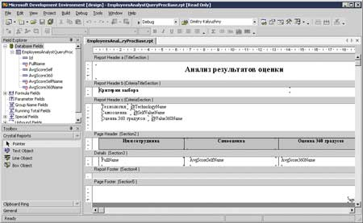
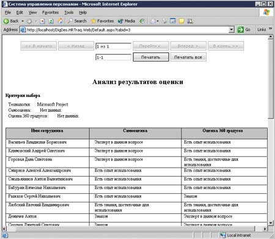
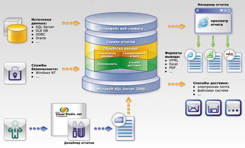
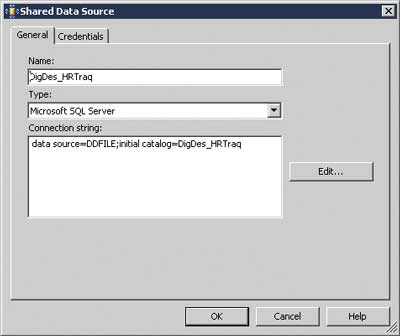
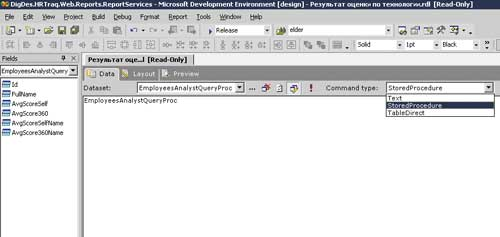
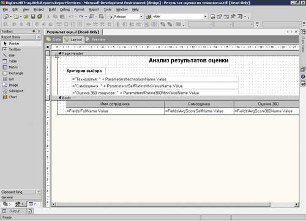
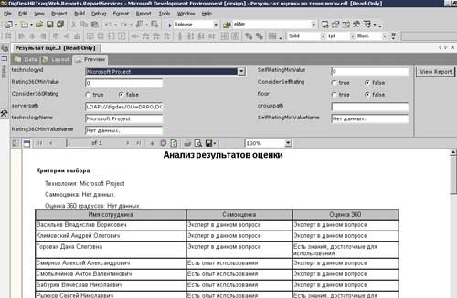
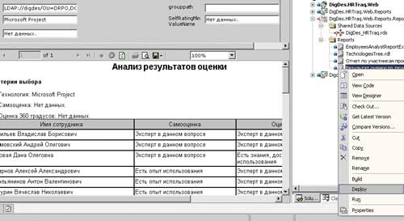
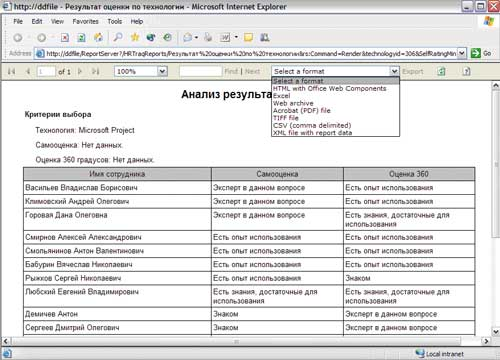

Антон Смольянинов,
начальник отдела исследований компании Digital Design
askrd@digdes.com
Современные приложения предоставляют множество способов доступа к интересующей пользователя информации. Для работы с данными разрабатываются специализированные программы. Обычные офисные средства, такие, как Microsoft Office, содержат интегрированные возможности для извлечения данных. В конечном счете всегда можно попросить администратора извлечь из базы данных ту информацию, которая в данный момент необходима пользователю.
Тем не менее наиболее распространенным и привычным способом работы с разнообразной информацией остается традиционная отчетная форма. С одной стороны, многие пользователи, особенно старшего поколения, все еще не находят в себе сил отказаться от стандартной бумажной формы представления отчета. С другой стороны, отчет - это прежде всего средство консолидации информации, зачастую различной специфики.
Требование предоставить отчетную функциональность часто фигурирует при разработке современных программных продуктов. В конечном счете все это привело к тому, что рынок оказался буквально наводнен как компонентами для надстройки приложений средствами поддержки отчетов, такими, как инструментарий Databeacon (http://www.databeacon.com), так и довольно мощными продуктами, поддерживающими цикл управления отчетами, где в числе лидеров следует назвать широко известные продукты Business Objects (http://www.businessobjects.com).
Подобные средства есть и в составе Microsoft Visual Studio .NET (VS.NET). Одно из них, называемое Crystal Reports for Microsoft Visual Studio .NET (CRVS), - это разработка Business Objects и поставляется по схеме лицензирования. Другое средство, Microsoft Reporting Services (MSRS), представляет собой полноценную платформу, базирующуюся на СУБД Microsoft SQL Server.
Crystal Reports for Microsoft Visual Studio .NET
Построение отчетов
История связи продуктов Crystal Decisions (см. также врезку "Продукты Crystal Reports") со средствами разработки Microsoft ведет свое начало с 1993 г. Именно тогда компоненты Crystal Reports впервые появились в Visual Basic 3.0. С 1996 г. ПО Crystal Reports входит в состав пакета средств разработки Visual Studio, а в 2002 г. стало частью VS.NET и .NET Framework, получив при этом официальное название CRVS. Появление компонентов Crystal Reports было отмечено в VS.NET 2003, и, вполне вероятно, они войдут в состав выходящего в этом году VS.NET 2005.
Основное назначение компонентов CRVS - поддержка разработки отчетной функциональности приложения. Предполагается, что в соответствии с требованиями будет разработан специализированный шаблон отчета - файл с расширением .rpt, задающий размещение данных на странице отчета (рис. 1). Кроме того, шаблон указывает, какие структуры данных служат источником для данных отчета. В дальнейшем шаблон передается на вход компонентам CRVS, которые извлекают данные из источника и на их основании формируют структуру итогового отчета. Для отображения отчета служит специальная программа просмотра (viewer), которая встраивается в разрабатываемое приложение (поддерживаются как Web-, так и Windows-приложения).
|  |
| Рис. 1. Архитектура Crystal Reports for Microsoft Visual Studio .NET.
|
Фактически процесс разработки сводится к вызову нескольких строчек кода, большая же часть работы выполняется при помощи "Дизайнера отчетов", встроенного в VS.NET. Таким образом, для создания шаблона отчета не нужно уметь программировать на платформе Microsoft .NET (MS.NET). При желании шаблон отчета можно включить в состав приложения, предоставив возможность его изменять. Это весьма удобно, так как в этом случае процедуру сопровождения разработанного приложения всегда можно поручить инженеру по внедрению.
Как говорилось выше, компоненты CRVS можно использовать для разработки как Web-ориентированных, так и обычных Windows-приложений, называемых в последнее время модным словом "умные" (smart) приложения. С точки зрения работы с данными компоненты Crystal Reports можно использовать в двух режимах работы - Push Model и Pull Model.
Push Model - модель работы с промежуточной структурой данных. При этом данные для отчетов формируются в виде привычной для .NET Framework структуры данных, называемой DataSet. Приложение берет на себя всю логику подготовки входных данных для построения отчетов. Это удобно тем, что данные могут быть сформированы абсолютно любым способом, а не только за счет прямого доступа к источнику данных. Тем не менее, если отчет получается достаточно большим, приходится заполнять довольно громоздкую структуру.
Pull Model - запрос данных по требованию. В этом случае шаблон отчета, передаваемый компонентам Crystal Reports, берет на себя работу, связанную с извлечением данных из источника. Данный подход весьма эффективен для отображения многостраничных отчетов, так как при этом из источника извлекаются только данные для отображаемых страниц.
Кроме формирования и отображения отчета, компоненты CRVS поддерживают экспорт полученных данных в форматы PDF, HTML, XLS, RTF и DOC, который может выполняться программно, что позволяет полностью скрыть использование приложением компонентов Crystal Reports. В этом случае приложение может создавать необходимые файлы отчетов прямо в каталоге файловой системы. Это очень удобно для пакетного режима создания файлов отчетов, когда пользователю нужно сформировать группу отчетов без их предварительного просмотра для последующей передачи результатов заинтересованным лицам.
Отметим вкратце достоинства и недостатки CRVS. Несомненное достоинство состоит в тесной интеграции как с .NET Framework, так и с VS.NET, что позволяет разработчику приложения создавать отчет, не отрываясь от средств разработки. Решения на основе компонентов CRVS неплохо масштабируются, поскольку это свойство заложено в архитектуру как Crystal Reports, так и Microsoft .NET. Не вызывает трудностей реализация сложных и интерактивных отчетов, коль скоро "кубики" для их создания, такие, как интерактивные управляющие элементы, уже присутствуют в CRVS.
А теперь "ложка дегтя" - речь пойдет о лицензировании CRVS. Лицензия на данный продукт, поставляемая с VS.NET, ограничивает его использование только однопроцессорными рабочими станциями. Кроме того, поддерживается одновременный запрос на построение отчетов не более пяти пользователей (five-user license). В случае необходимости дополнительные лицензии можно приобрести отдельно, однако данное ограничение снижает масштабируемость решений, использующих CRVS. Информацию о поддержке и лицензировании CRVS можно найти по адресу http://support.microsoft.com/kb/317789.
Относительный недостаток данного продукта - тщательно скрываемая его производителем реализация ядра компонентов на предыдущем поколении технологий Microsoft (он разработан с использованием Win32 и языка C++). Классы .NET, "оборачивающие" вызовы библиотек динамической загрузки, делают программное использование Crystal Reports достаточно простым. Однако работающий в ядре неуправляемый (unmanaged) код может привести к нестандартным инфраструктурным проблемам, таким, как конкурирование динамической сборки мусора в платформе .NET и традиционного алгоритма работы с памятью. Двигаясь по пути решения этой проблемы, производитель начал постепенный переход на платформу .NET, выпустив в рамках версии 1.1 (поставляемой в составе VS.NET 2003) компоненты, неуправляемый код которых помещен прямо в сборки .NET. Эта модификация должна по крайней мере упростить процедуру развертывания, позволяя переносить с приложением, использующим компоненты Crystal Reports, только сборки .NET. Ожидается, что полный переход CRVS на платформу .NET будет завершен в версии 2.7, которая, вполне вероятно, войдет в состав VS.NET 2005.
Несмотря на то что архитектура компонентов CRVS позволяет организовать сценарий многоуровневого распределения процессов формирования итогового отчета, все же данный продукт не подходит для организации всего цикла управления отчетами. Для решения этой задачи предназначена платформа MSRS*.
* CRVS имеет еще то достоинство, что эти средства интегрированы в Visual Studio .NET и поставляются в составе издания Professional. Чтобы расширить свои возможности, разработчик может перейти к полнофункциональным коммерческим версиям продуктов Crystal Reports. - Прим. ред.
Пример использования
В качестве примера посмотрим, во что обойдется реализация простого отчета, содержащего одну таблицу. Представим себе, что существует база данных Microsoft SQL Server, содержащая данные о текущем уровне технических знаний персонала. Для каждого сотрудника в базе хранится список технологий, которыми он владеет, а также уровень владения ими. Уровень владения отражается с помощью одной из двух оценок: самооценки (данной сотрудником самому себе) и "оценки 360", полученной в результате опроса людей, работающих совместно с этим сотрудником.
Оценки сотрудников можно разделить на пять основных типов (в порядке убывания знаний):
- эксперт в данном вопросе - консультирует своих коллег;
- есть опыт использования - владеет технологией, использует ее в работе;
- есть знания, достаточные для использования, - хорошее знакомство с технологией;
- знаком - знакомство с технологией, понимание того, что она собой представляет;
- не знаком - отсутствие знакомства с технологией.
Задача состоит в следующем: руководителю предприятия необходимо узнать, кто из сотрудников лучше всего знаком с Microsoft Project - широко известным продуктом для планирования. Список сотрудников нужно отсортировать в порядке убывания знаний. Для упрощения задачи используем режим Push Model, т. е. в качестве отправной точки возьмем готовую структуру данных (DataSet).
Создание отчета начинается с подготовки его шаблона. Для этого воспользуемся "Дизайнером отчетов" (рис. 2). Чтобы получить связь с данными в источнике, следует импортировать структуру данных в шаблон отчета. После этого в левой верхней панели мы увидим структуру, а также набор полей, который в нее входит. Размещая поля на странице отчета, мы связываем данные в источнике с их размещением в шаблоне отчета. Для конструирования сложных отчетов можно использовать элементы управления, расположенные на левой нижней панели.
|  |
| Рис. 2. Создание отчета при помощи "Дизайнера отчетов" Crystal Reports.
|
В результате работы "Дизайнера отчетов" получается файл с расширением .rpt, содержащий созданный дизайн шаблона отчета. Для отображения отчета следует включить в состав приложения программу просмотра, называемую CrystalReportViewer и находящуюся в пространстве имен CrystalDecisions.Web - для Web-приложений и CrystalDecisions.Windows.Forms - для Windows-приложений.
Затем необходимо выполнить несколько простых действий:
- создать программное представление отчета на основании его шаблона (ReportDocument);
- заполнить данными структуру DataSet и передать ее ReportDocument с помощью метода SetDataSource;
- отобразить отчет в программе просмотра (выполняется это с помощью указания свойству ReportSource объекта ReportDocument).
При отображении отчета обозреватель использует компоненты CRVS, структуру данных и шаблон для отображения готового отчета (рис. 3).
|  |
| Рис. 3. Вид готового отчета (вариант для Web-приложения).
|
Продукты Crystal ReportsС момента своего выхода на рынок в начале 90-х годов программа Crystal Reports заняла лидирующие позиции в сегменте средств формирования отчетов и удерживает их по сей день. Во многом этот успех обеспечен долголетним сотрудничеством ее разработчика (сначала Crystal Services, потом Crystal Decisions) с ведущими поставщиками средств разработки и СУБД: еще в середине 90-х OEM-версия Crystal Reports входила в состав почти 150 продуктов нескольких десятков производителей (Microsoft, Borland, Sybase и т. п.) и уже давно стала стандартом де-факто для Windows-разработчиков. За 10 лет присутствия Crystal Reports на рынке было продано более 4 млн лицензий. В начале века Crystal Decisions предлагала на рынке три основных продукта: Crystal Reports, Crystal Analysis (бизнес-аналитика) и Crystal Enterprise (инструментальная Web-платформа для различных архитектур - Java, .NET, COM), которые поставлялись также в составе объединенного пакета Crystal Suite. В конце 2003 г. Crystal Decisions была куплена компанией Business Objects (http://www.businessobjects.com), которая выпустила новую версию Crystal Suite 10. В январе 2005 г. на рынок вышла следующая версия продукта, но уже под новой торговой маркой - BusinessObjects XI. Crystal Reports 11 также выпускается как отдельный продукт в нескольких изданиях - Standard, Professional, Developer, Advanced Developer. Вариант Crystal Reports for .NET 2003 (помимо VS.NET, он входит в состав Borland C#Builder и Delphi) по своим функциональным возможностям примерно аналогичен выпуску Crystal Reports 8.5 Standard Edition. |
Microsoft Reporting Services
Управление отчетами
Не секрет, что основу множества программных систем составляет ядро, предназначенное для хранения данных. Использование в его качестве промышленной СУБД обеспечивает будущей системе надежный фундамент, неотъемлемую часть успешной разработки. Этот подход - построение продукта вокруг СУБД - и лег в основу разработки MSRS*. Прямым следствием этого стал благополучный выпуск продукта, а насколько применение данного подхода сделает его успешным и востребованным - покажет ближайшее будущее.
* Обзор MSRS можно также найти в статье "Средства создания отчетов от Microsoft", "BYTE/Россия" № 3'2004.
Любой из серверных продуктов, выпускаемых самой Microsoft, нуждается в отчетной функциональности, которую ранее было принято брать из первых оказавшихся под рукой средств. Мы помним отчеты в формате HTML, выгрузку данных в Excel и Word. В подобных условиях не может быть и речи не только о единой службе - поставщике любых типов отчетов, но и о консолидации содержащихся в них данных.
Осознание этой проблемы привело к тому, что в январе 2004 г. состоялся выпуск платформы для управления отчетами MSRS. В середине 2004 г. платформа получила первый пакет обновлений. В настоящий момент MSRS интегрируется с такими продуктами, как Microsoft CRM 1.2, Exchange Server 2003 и Operations Manager 2005.
Главная задача MSRS - обеспечить комплексный подход к управлению отчетами и поддержку всего жизненного цикла отчетов (рис. 4), включающего создание отчетов, управление ими и доставку отчетов.
|  |
| Рис. 4. Архитектура платформы Microsoft Reporting Services.
|
Как видно из рис. 4, в ядре MSRS находятся следующие службы:
- извлечение информации из источников;
- обработка данных и формирование отчета;
- доставка отчета;
- поддержка интегрированной безопасности.
Создание отчета, как и в случае CRVS, начинается с подготовки шаблона размещения данных на странице отчета. Для подготовки шаблона используется "Дизайнер отчетов" (Report Designer). Данный инструмент тесно интегрирован с VS.NET и инсталлируется при установке компонентов MSRS. Результатом его работы становится файл шаблона отчета с расширением .rdl, содержащий описание структуры будущего отчета на XML-ориентированном языке Report Definition Language (подробное его описание можно найти по адресу http://www.microsoft.com/sql/reporting/techinfo/rdlspec.asp).
Кроме размещения данных, в шаблоне отчета описывается связь с источниками данных, такими, как SQL Server 7.0 и 2000, SQL Server 2000 Analysis Services, Oracle, а также любыми источниками OLE DB и ODBC.
"Дизайнер отчетов" позволяет создать будущий шаблон за три шага:
- определение источников данных;
- размещение данных из источников на различных листах отчета;
- предварительный просмотр будущего отчета.
Особенно удобна функция предварительного просмотра, позволяющая видеть будущий отчет и исправлять допущенные в процессе создания недочеты. Следует также отметить, что шаблон отчета может принимать информацию, на основании которой формируется содержимое отчета. Это свойство позволяет реализовать параметризованные отчеты.
После создания шаблона для формирования итогового отчета следует использовать "Менеджер отчетов" (Report Manager). Согласно представленной ранее схеме службы MSRS, данный компонент взаимодействует с сервером отчетов, выполняющим всю работу по извлечению данных и формированию результатов. "Менеджер отчетов" имеет Web-ориентированный интерфейс, позволяющий выполнять следующие операции:
- помещать шаблон отчета на сервер;
- управлять иерархией размещения отчетов;
- формировать выбранный пользователем отчет;
- разграничивать доступ к отдельным отчетам, каталогам отчетов, а также источникам данных (используется ролевая модель, базирующаяся на интегрированной безопасности Windows);
- определять методику доставки отчета потребителям ("подписку").
"Менеджер отчетов" умеет представлять данные своего интерфейса в HTML-формате, а также конвертировать в файлы PDF, XLS, XML, CSV и популярные графические форматы.
Как же быть с традиционными Windows-приложениями? В настоящий момент Microsoft предлагает решение, основанное на внедрении в Windows-приложения управляющего элемента ActiveX для просмотра Web; доступ к данным организован посредством получения HTML от того же "Менеджера отчетов". Пример реализации такого приложения включен в поставку MSRS.
Из достоинств MSRS отметим, что продукт поддерживает процесс получения отчетов пользователями системы. MSRS успешно используется как в специализированных проектах, нацеленных на предоставление отчетной функциональности, так и там, где пользователь, владеющий VS.NET, хочет иметь возможность самостоятельно конструировать отчеты.
У продукта, разумеется, есть и недостатки. Например, тесная интеграция с SQL Server, выступающим в качестве хранилища отчетов, не позволяет применять MSRS там, где данная СУБД отсутствует либо ее использование не планируется. Другой существенный минус - недоступность редактора шаблонов отчетов в отсутствие VS.NET. Это не дает возможности пользователям будущей системы создавать и редактировать шаблоны отчетов. Для решения этой проблемы можно разработать свой редактор, формирующий XML-описание шаблона отчета. Некоторые из производителей, например, Cizer Software, уже воспользовались этим (см. http://www.cizer.com/PortalCSVS/DesktopDefault.aspx?tabindex=1&tabid=30).
Безусловный недостаток MSRS - Web-ориентированность "Менеджера отчетов", а также отсутствие полноценного управляющего элемента для отображения отчетов в Windows-приложениях. Решение этой проблемы заложено в архитектуру MSRS в виде доступа к серверу отчетов при помощи технологии Web-сервисов. Как обещает Microsoft, такое средство должно появиться в выходящем в этом году Microsoft SQL Server 2005.
Среди небольших проблем следует также отметить отсутствие экспорта отчета в формат RTF и DOC, отсутствие возможности печати HTML-представления отчета, а также невозможность локализации интерфейса "Менеджера отчетов". Хочется надеяться, что данные проблемы будут решены в будущих версиях и пакетах обновления.
Тем не менее MSRS обладает хорошей расширяемостью, что, наряду с тем фактом, что продукт полностью разработан с использованием .NET Framework, делает его весьма универсальным и удобным в использовании.
Пример использования
Для иллюстрации использования MSRS воспользуемся тем же примером, на котором демонстрировали возможности CRVS.
Прежде всего создадим шаблон отчета, воспользовавшись VS.NET и "Дизайнером отчетов" (Report Designer). Для этого укажем источник данных для будущего отчета (рис. 5). Затем с помощью вкладки Data "Дизайнера отчетов" укажем процедуру для извлечения информации, выполняющую всю логику формирования готовой для отображения структуры данных (рис. 6).
|  |
| Рис. 5. Указание источника данных для отчета.
|
|  |
| Рис. 6. Выбор процедуры извлечения информации в "Дизайнере отчетов".
|
На левой панели можно увидеть поля структуры данных, которую возвращает процедура EmployeesAnalystQueryProc. Эти поля служат основой для связывания данных с их размещением на странице отчета. Следует отметить - и это демонстрирует раскрывающийся список - что источником данных может быть не только процедура.
После этого мы получаем возможность конструировать структуру отчета на базе информации, предоставляемой процедурой EmployeesAnalystQueryProc. Для этого служит вкладка Layout "Дизайнера отчетов" (рис. 7). При конструировании шаблона отчета мы пользуемся панелью инструментов, содержащей элементы управления для отображения данных в отчете. Как видно из рис. 7, среди них есть такие "кубики", как Image (Изображение), List (Список) и т. п. В процессе конструирования обязательно нужно связать элементы отчета с полями структуры данных, которую возвращает процедура EmployeesAnalystQueryProc.
|  |
| Рис. 7. Размещение данных на странице отчета.
|
В процессе создания шаблона отчета можно удобно и быстро посмотреть на то, что получается. Для этого существует вкладка Preview (рис. 8). В связи с тем, что данный отчет является параметризированным, в верхней части видна панель настройки параметров, передаваемых отчету. При нажатии на клавишу View Report на этой панели отчет заполняется данными, и в нижней части окна VS.NET появляется внешний вид будущего отчета.
|  |
| Рис. 8. Предварительный просмотр отчета.
|
В результате выполненных действий мы получаем шаблон отчета для формирования итогового отчета. Шаблон следует поместить на сервер отчетов. Это можно сделать при помощи команды Upload file, воспользовавшись "Менеджером отчетов", либо, что гораздо проще, с помощью контекстного меню и команды Deploy VS.NET (рис. 9).
|  |
| Рис. 9. Развертывание отчета.
|
После этой операции шаблон отчета помещается на сервер отчетов, и теперь можно увидеть готовый отчет, содержащий данные, выбрав его в "Менеджере отчетов" (рис. 10). Обратите внимание на панель навигации, которая выводится в верхней части страницы отчета. Эта панель позволяет организовать постраничный просмотр отчета и (с помощью команды Select a format в раскрывающемся списке) преобразовать отчет в любой из представленных форматов данных.
|  |
| Рис. 10. Вид готового отчета.
|
Резюмируя, следует сказать, что и MSRS, и CRVS не только содержат средства для табличного представления данных, но и поддерживают реализацию интерактивных отчетов.
Рекомендации по выбору
Прежде всего отметим, что предлагаемые рекомендации основаны на функциональных особенностях каждого из продуктов, а также на опыте их использования.
MSRS подходит для проектов, в которых либо уже используется Microsoft SQL Server, либо существует возможность его задействовать. MSRS предоставляет разработчику максимум возможностей для поддержки всего цикла управления отчетами. Можно уверенно утверждать, что MSRS в качестве основы таких проектов обеспечит надежную базу для разработки отчетной функциональности приложения. Кроме этого, в будущем пользователи смогут получить удобную возможность разработки собственных отчетов, а также поддержку создания на основе MSRS отчетов для других приложений.
Не стоит забывать о недостатках MSRS. Если вам нужен "Дизайнер отчетов" и вы не можете позволить себе обучать сотрудников работе с VS.NET, то следует обратить внимание на рынок компонентов других производителей.
Если большая часть объема функциональности вашего приложения - это работа с разными по своей структуре отчетами, и при этом данные для них годятся MSRS в качестве источника, то можно уверенно констатировать, что вам и будущим пользователям приложения сильно повезло. Кроме полноценной отчетной системы, в качестве бесплатного бонуса они получают достаточно универсальное средство для конвертирования отчетов в широкий спектр форматов.
С другой стороны, если вы не можете позволить себе Microsoft SQL Server и, как следствие, MSRS, следует обратить внимание на возможности CRVS. Быть может, вашему приложению, не слишком сложному с точки зрения управления жизненным циклом отчетов, будет достаточно встроенной поддержки отчетной функциональности.
Обзорный характер статьи, к сожалению, не предполагает подробного рассмотрения всех возможностей компонентов. Например, мы не упомянули о том, что Crystal Reports позволяет организовать взаимодействие с помощью актуальной технологии Web-служб, а MSRS имеет расширяемую программную модель. Тем не менее будем надеяться, что представленной информации вполне достаточно, чтобы сделать правильный выбор.